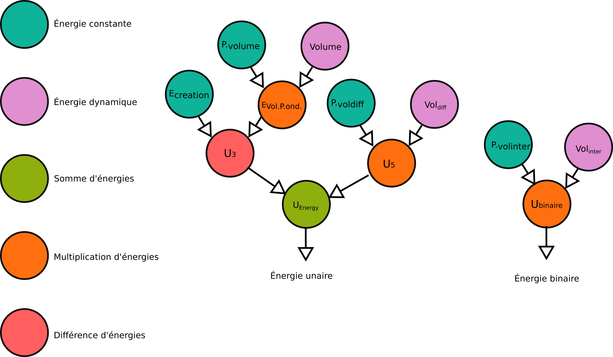

Paramétrer la fonction d'optimisation
Dans cette partie, nous présentons comment est configuré l'algorithme d'optimisation à travers les conditions initiales et d'arrêt, ainsi que la définition de la fonction d'optimisation.
Les parties suivantes reprennent les principales étapes de création du sampler dont le code est repris dans la dernière partie de la page sur l'implémentation (étape 2) , c'est à dire le code suivant :
//Step 2 : Preparation of the optimizer
//Étape 2 : Préparation de l'optimiseur
//Initializing the configuration (optimisation function + set of cuboid)
//Initizialization de la configuration (fonction d'optimisation + stock les cuboids de la configuration courante
GraphConfiguration<Cuboid> conf = null;
try {
conf = create_configuration(p, AdapterFactory.toGeometry(new GeometryFactory(), bpu.getGeom()), bpu);
} catch (Exception e) {
e.printStackTrace();
}
// Temperature initialization
//Initialization de la fonction de la température
Schedule<SimpleTemperature> sch = create_schedule(p);
//The end test condition
end = create_end_test(p);
Définition de la fonction d'optimisation
Principe général
La fonction à optimiser est contenue dans un objet de la classe générique GraphConfiguration<?> à typer en fonction de la classe paramétrique utilisée. La fonction d'optimisation est composée de 3 énergies :
- une énergie unaire (interface UnaryEnergy<?>), qui évalue indépendant une énergie pour chacun des objets ;
- une énergie binaire (interface BinaryEnergy<?>), qui évalue une énergie pour chaque couple d'objet ;
- une énergie de collection facultative (interface CollectionEnergy<?>), qui évalue la somme pour l'ensemble de la collection.
Les interfaces des classes ne définissent qu'une méthode double getValue() qui renvoie la valeur numérique associée
La valeur de la fonction d'optimisation est la somme des contributions de ces trois types d'énergie. Pour produire ces contributions, il est possible, pour chaque type d'énergie, de combiner différents opérateurs (addition, soustraction, multiplication, etc.) pour produire des énergies composites. La définition de ces opérateurs se trouve dans le package fr.ign.rjmcmc.energy de la librjmcmc4j.
Attention: la librjmcmc4j est une bibliothèque minimisant par convention la fonction énergétique, il est nécessaire d'adapter l'instanciation de la fonction d'énergie en accord avec ce principe. Dans l'exemple au début, il s'agit de minimiser - volume(configuration)).
Illustration avec l'exemple
La formule de l'énergie dans l'exemple est la suivante :

L'énergie unaire contient différents termes : - Ecreation a pour objectif de pénaliser les boîtes ne contribuant pas suffisamment à la configuration. La définition de ce paramètre est indispensable : en effet, rien n’empêche l’intersection de boîtes. Sans ce paramètre, que nous nommons énergie de création, le système pourrait très bien proposer des configurations contenant de très nombreuses boîtes qui ne contribueraient pas à augmenter le volume global de la configuration ; - volume(b) qui définit le volume de chaque boîte indépendamment ; - volumeDifference(bPU,b) qui définit une énergie en fonction du dépassement en termes de volume de l'unité foncière simulée (bPU). Cette contrainte est ajoutée comme les règles n'imposent pas dans l'exemple que les boîtes se trouvent strictement à l'intérieur de l'unité foncière. L'objectif de ce terme est d'autoriser le dépassement que si celui-ci contribue significativement à l'amélioration du volume. Les deux derniers termes sont pondérés par les ponderationVolume et ponderationDifference.
L'énergie binaire est composé de l'opérateur volumeintersection(b1, b2) qui évalue la différence des volumes entre chaque couple de boîte qui est pondéré par ponderation_volume_inter.
Les différentes pondérations et la valeur Ecreation sont paramétrables, dans l'exemple, dans le fichier params.json.

La figure ci-dessus représente le graphe d'énergie tel que modélisé en accord avec le formalisme de la librjmcmc4j. Les énergies dynamiques sont évaluées à chaque itération et implémentent UnaryEnergy<?> et BinaryEnergy<?> en fonction de l'énergie modélisée.
Il s'agit d'une représentation du code qui se situe ci-dessous et qui est utilisé dans le premier exemple de simulation.
/**
* Creation of a cuboid configuration
* @param p parameters from the json file
* @param bpu the basic property unit on which the optimization will be
* proceeded
* @param geom the geometry that contains the cuboids
* @return a new configuration that embeds the calculation of the optimization
* function
*/
public GraphConfiguration<Cuboid> create_configuration(SimpluParameters p, Geometry geom, BasicPropertyUnit bpu) {
// Énergie constante : à la création d'un nouvel objet
ConstantEnergy<Cuboid, Cuboid> energyCreation = new ConstantEnergy<Cuboid, Cuboid>(p.getDouble("energy"));
// Énergie constante : pondération de l'intersection
ConstantEnergy<Cuboid, Cuboid> ponderationVolume = new ConstantEnergy<Cuboid, Cuboid>(
p.getDouble("ponderation_volume"));
// Énergie unaire : aire dans la parcelle
UnaryEnergy<Cuboid> energyVolume = new VolumeUnaryEnergy<Cuboid>();
// Multiplication de l'énergie d'intersection et de l'aire
UnaryEnergy<Cuboid> energyVolumePondere = new MultipliesUnaryEnergy<Cuboid>(ponderationVolume, energyVolume);
// On retire de l'énergie de création, l'énergie de l'aire
UnaryEnergy<Cuboid> u3 = new MinusUnaryEnergy<Cuboid>(energyCreation, energyVolumePondere);
double ponderationExt = p.getDouble("ponderation_difference_ext");
UnaryEnergy<Cuboid> unaryEnergy;
if (ponderationExt != 0) {
// Énergie constante : pondération de la différence
ConstantEnergy<Cuboid, Cuboid> ponderationDifference = new ConstantEnergy<Cuboid, Cuboid>(
p.getDouble("ponderation_difference_ext"));
// On ajoute l'énergie de différence : la zone en dehors de la parcelle
UnaryEnergy<Cuboid> u4 = new DifferenceVolumeUnaryEnergy<Cuboid>(geom);
UnaryEnergy<Cuboid> u5 = new MultipliesUnaryEnergy<Cuboid>(ponderationDifference, u4);
unaryEnergy = new PlusUnaryEnergy<Cuboid>(u3, u5);
} else {
unaryEnergy = u3;
}
// Énergie binaire : intersection entre deux rectangles
ConstantEnergy<Cuboid, Cuboid> c3 = new ConstantEnergy<Cuboid, Cuboid>(p.getDouble("ponderation_volume_inter"));
BinaryEnergy<Cuboid, Cuboid> b1 = new IntersectionVolumeBinaryEnergy<Cuboid>();
BinaryEnergy<Cuboid, Cuboid> binaryEnergy = new MultipliesBinaryEnergy<Cuboid, Cuboid>(c3, b1);
// empty initial configuration*/
GraphConfiguration<Cuboid> conf = new GraphConfiguration<>(unaryEnergy, binaryEnergy);
return conf;
}
Conditions initiales et condition d'arrêt
La fonction de température est fixée dans la méthode create_schedule et vise à moduler la probabilité d'acceptation durant la simulation. Les différents types possibles de température sont ceux de la librjmcmc4j (package fr.ign.simulatedannealing.schedule). Dans le cadre de SimPLU3D, nous avons opté pour la température de Métropolis. Il s'agit d'une fonction géométrique décroissante qui nécessite deux paramètres : une température initiale (valeur temp du fichier de configuration) et un coefficient de décroissance (valeur deccoef). D'après les articles sur le recuit simulé, il est conseillé de fixer cette valeur comme étant la plus grande variation possible de la fonction d'optimisation entre deux états (par exemple, dans le cadre du volume, il s'agit de l'écart entre une parcelle vide et une parcelle complètement bâtie par le bâtiment le plus haut possible). Le coefficient doit être fixé très proche de 1 (comme dans les fichiers exemples). Si vous souhaitez en savoir plus, vous pouvez consulter l'article suivant :
Brédif, M., Tournaire, O., Aug. 2012. librjmcmc: An open-source generic c++ library for stochastic optimization. In: The XXII Congress of the International Society of Photogrammetry and Remote Sensing. (https://www.int-arch-photogramm-remote-sens-spatial-inf-sci.net/XXXIX-B3/259/2012/isprsarchives-XXXIX-B3-259-2012.pdf)
Trois types de condition d'arrêt sont utilisables à travers la méthode create_end_test et leurs paramètres sont définis dans le fichier de configuration : - absolute : le simulateur s'arrête au bout de absolute_nb_iter) itérations, ce nombre est fixé dans le fichier de configuration ; - relative : le simulateur si la fonction énergétique ne s'améliore pas de la valeur delta pendant relative_nb_iter itérations ; - composite : le simulation s'arrête lorsque la première condition d'arrêt (entre absolute et relative) est atteinte. On peut choisir avec le fichier de configuration entre ces trois types grâce au paramètre end_test_type qui peut prendre comme valeur absolute, relative ou composite.